3,526.405 → 324.338 ms
Release c8d → final c14, 10k stat. Checkpoint 7f was 319.135 ms: final +1.63% is a descriptive median increase, not an established regression.
EXPERIMENT 08 / FILESYSTEM AUTOMATION
A project tree under inspection.
Five runtimes. One verified filesystem.
Nift completes the work.
Bulk checksum and mirror throughput still lag.
f000000.mdGENERATE
f000001.jsonINSPECT
f000004.datCOPY
Nift 4.12.0 final candidate · Python 3.15.0 · Node 24.21.0 · Bun 1.4.3 · Go 1.27.2
project/walk/A directory walk becomes a runtime workload long before it becomes a bandwidth test.
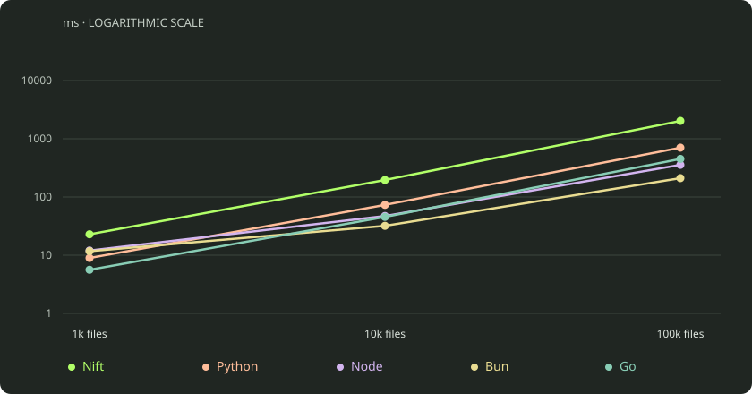
| Workload | Nift | Python | Node | Bun | Go |
|---|---|---|---|---|---|
| 1k files | 22.877 | 8.966 | 12.035 | 11.726 | 5.619 |
| 10k files | 196.061 | 73.194 | 47.143 | 31.965 | 45.458 |
| 100k files | 2,029.268 | 703.614 | 356.774 | 210.880 | 451.046 |
Exact values above. On small screens, scroll the table independently →
project/inspect/Type-only checks acquire size metadata too. The explicit stat workload adds two queries per file.
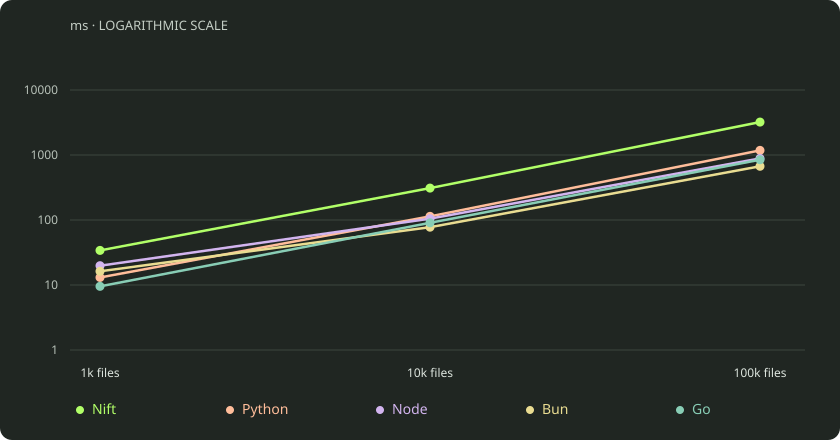
| Workload | Nift | Python | Node | Bun | Go |
|---|---|---|---|---|---|
| 1k files | 34.056 | 13.063 | 19.813 | 16.265 | 9.538 |
| 10k files | 309.684 | 113.802 | 104.888 | 77.531 | 90.535 |
| 100k files | 3,210.583 | 1,177.859 | 886.655 | 670.540 | 845.759 |
Exact values above. On small screens, scroll the table independently →
Historical release trace, not final-candidate syscall measurements; linear zero-origin counts. Counts include directory/runtime work. Only four readlinks per trace. Syscall counts do not explain all wall time.
project/select/Every filter stats every file before selection. Selection percentages describe results, not avoided metadata work.
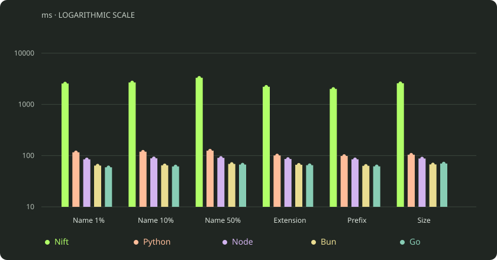
| Workload | Nift | Python | Node | Bun | Go |
|---|---|---|---|---|---|
| Name 1% | 550.021 | 132.821 | 101.850 | 77.676 | 67.646 |
| Name 10% | 543.735 | 134.178 | 99.377 | 76.986 | 71.627 |
| Name 50% | 607.154 | 138.870 | 109.221 | 80.265 | 76.184 |
| Extension | 378.766 | 105.971 | 92.159 | 70.592 | 70.459 |
| Prefix | 365.017 | 103.940 | 92.260 | 72.501 | 67.436 |
| Size | 324.383 | 110.011 | 96.160 | 73.193 | 78.562 |
Exact values above. On small screens, scroll the table independently →
project/read/The checksum visits every byte in the language. Large-file reads load the full payload but aggregate endpoints only.
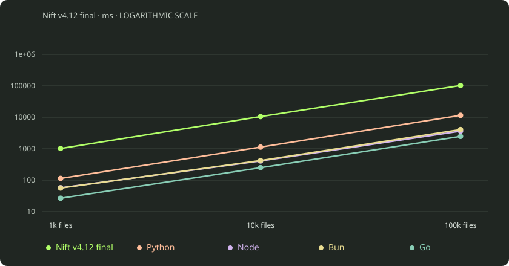
| Workload | Nift | Python | Node | Bun | Go |
|---|---|---|---|---|---|
| 1k files | 1,019.024 | 113.848 | 57.197 | 56.240 | 26.617 |
| 10k files | 10,530.112 | 1,127.583 | 408.164 | 421.197 | 249.394 |
| 100k files | 102,441.259 | 11,525.007 | 3,627.604 | 4,062.430 | 2,472.142 |
Exact values above. On small screens, scroll the table independently →
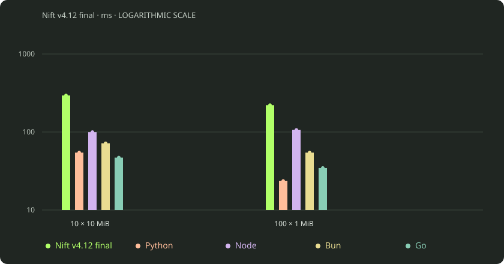
| Workload | Nift | Python | Node | Bun | Go |
|---|---|---|---|---|---|
| 10 × 10 MiB | 293.858 | 54.389 | 99.725 | 71.541 | 46.997 |
| 100 × 1 MiB | 220.743 | 23.525 | 106.170 | 54.369 | 34.573 |
Exact values above. On small screens, scroll the table independently →
project/fingerprint/Native SHA-256 is unavailable in this Nift snapshot. The portable checksum cannot substitute for a cryptographic release manifest.
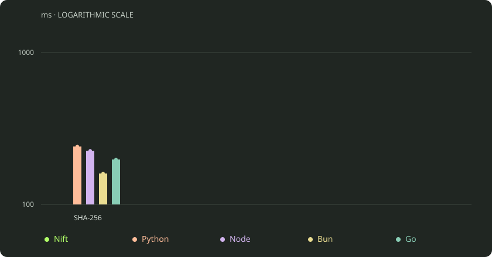
| Workload | Nift | Python | Node | Bun | Go |
|---|---|---|---|---|---|
| SHA-256 | — | 295.954 | 290.092 | 191.766 | 237.422 |
Exact values above. On small screens, scroll the table independently →
project/write/Stream writes include source reads; copies verify bytes and paths, not permissions or metadata.
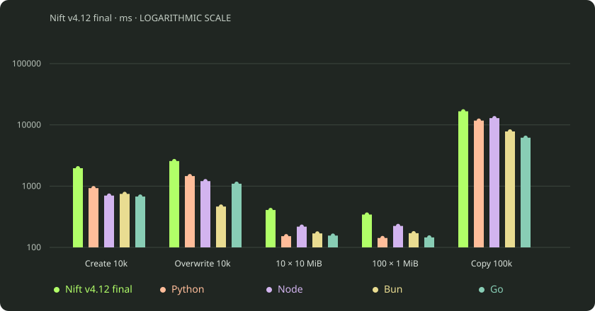
| Workload | Nift | Python | Node | Bun | Go |
|---|---|---|---|---|---|
| Create 10k | 1,961.167 | 927.347 | 701.237 | 747.142 | 675.893 |
| Overwrite 10k | 2,567.117 | 1,459.327 | 1,207.568 | 464.282 | 1,095.094 |
| 10 × 10 MiB | 407.801 | 152.489 | 218.158 | 169.130 | 155.823 |
| 100 × 1 MiB | 343.660 | 142.333 | 223.981 | 170.532 | 145.462 |
| Copy 100k | 16,647.781 | 11,739.109 | 12,887.422 | 7,814.195 | 6,175.213 |
Exact values above. On small screens, scroll the table independently →
project/mirror/Both trees are fingerprinted. Identical destination files retain their timestamps.
keep.md unchanged
~ edit.md new bytes
+ add.dat new path keep.md preserve mtime
~ edit.md replace bytes
+ add.dat copy
- old.dat remove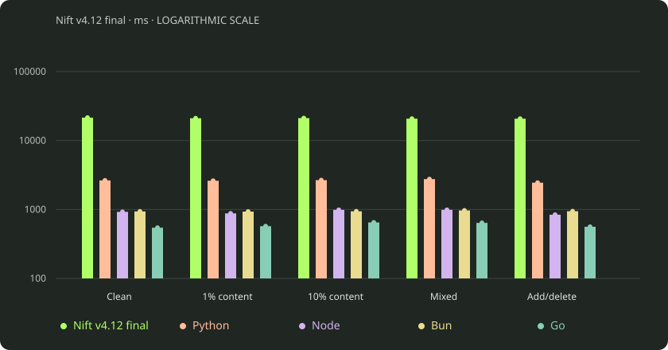
| Workload | Nift | Python | Node | Bun | Go |
|---|---|---|---|---|---|
| Clean | 21,479.644 | 2,640.587 | 923.544 | 936.652 | 543.993 |
| 1% content | 21,048.003 | 2,609.835 | 876.791 | 932.018 | 572.536 |
| 10% content | 21,153.051 | 2,662.650 | 987.168 | 940.122 | 648.510 |
| Mixed | 20,744.535 | 2,756.055 | 987.482 | 967.749 | 639.076 |
| Add/delete | 20,726.105 | 2,446.563 | 839.236 | 942.746 | 560.993 |
Exact values above. On small screens, scroll the table independently →
project/changes/Modification-time access is unavailable in this Nift snapshot. Content and timestamp detection intentionally answer different questions.
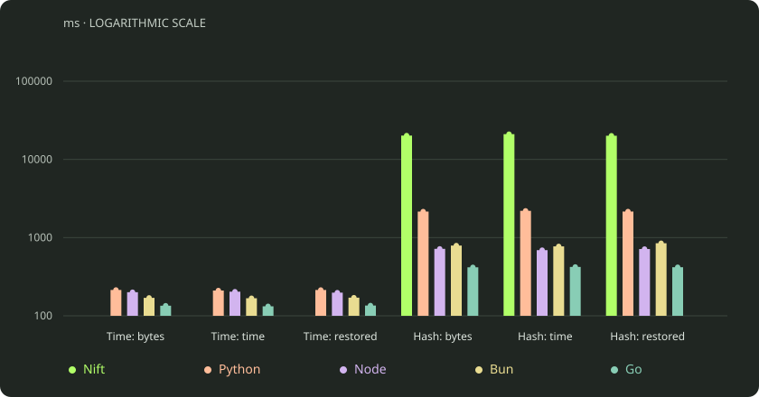
| Workload | Nift | Python | Node | Bun | Go |
|---|---|---|---|---|---|
| Time: bytes | — | 213.947 | 200.263 | 169.598 | 134.602 |
| Time: time | — | 210.445 | 203.443 | 167.721 | 132.169 |
| Time: restored | — | 213.778 | 197.703 | 170.574 | 135.238 |
| Hash: bytes | 20,165.358 | 2,151.856 | 718.198 | 791.047 | 416.777 |
| Hash: time | 21,031.620 | 2,198.582 | 691.207 | 772.116 | 421.593 |
| Hash: restored | 20,065.571 | 2,154.094 | 713.792 | 847.003 | 417.963 |
Exact values above. On small screens, scroll the table independently →
project/pipeline/Generate documents, copy selected assets and produce a sorted manifest. This is controlled project automation, not a website build.
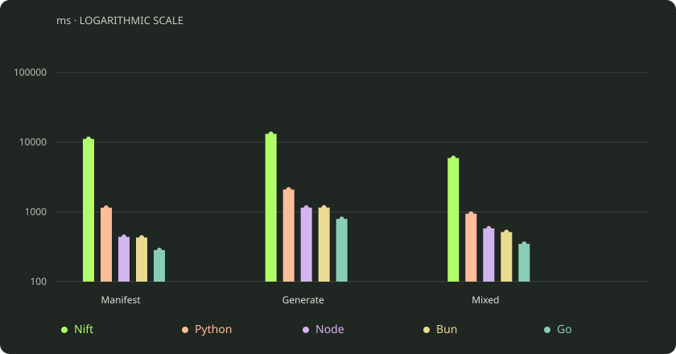
| Workload | Nift | Python | Node | Bun | Go |
|---|---|---|---|---|---|
| Manifest | 11,105.603 | 1,144.951 | 437.788 | 428.656 | 283.115 |
| Generate | 13,139.376 | 2,095.683 | 1,150.373 | 1,154.427 | 791.976 |
| Mixed | 5,921.117 | 940.791 | 578.602 | 513.347 | 348.163 |
Exact values above. On small screens, scroll the table independently →
project/memory/The official wait4 RSS contains an inherited supervisor-image floor. It cannot rank runtime memory efficiency.
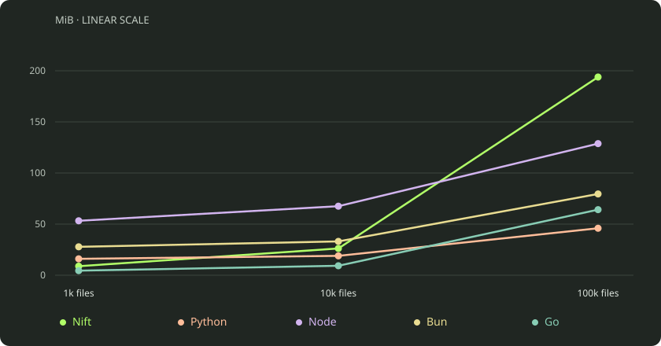
| Workload | Nift | Python | Node | Bun | Go |
|---|---|---|---|---|---|
| 1k files | 8.848 | 16.043 | 53.250 | 27.801 | 4.477 |
| 10k files | 26.184 | 18.953 | 67.543 | 33.090 | 9.262 |
| 100k files | 193.871 | 45.961 | 128.738 | 79.500 | 64.145 |
Exact values above. On small screens, scroll the table independently →
The final-candidate noop-child control rose from 16.75 to 80.75 MiB when the parent allocated 64 MiB, despite doing no runtime workload. No final-candidate post-exec walk cohort was measured; the graph above remains explicitly historical. Frozen raw RSS is retained unchanged; no constant has been subtracted.
project/diagnostics/Separate three-version same-node controls; three measured observations per version, descriptive rather than a significance test.
Release c8d → final c14, 10k stat. Checkpoint 7f was 319.135 ms: final +1.63% is a descriptive median increase, not an established regression.
Size filtering / 10k files. Every file is statted before selection. The exact 40% selected result is checked.
Exact path inventory. These controls do not replace the official full distributions or peer comparisons.
Final inline and bound execute reductions run exactly once. The historical three-execution defect is preserved in the archived report; it is not a current failure.
Portable checksum/content detection still reaches a 49.89× wall deficit against Go in the final official matrix. Faster metadata does not remove per-byte policy/interpreter cost. Historical profiles and syscall traces are archived leads, not fresh final-candidate profiles.
project/practitioner/AI-DX is an independent axis; useful explicitness does not imply a universal throughput win.
Human + agent: Python for a new general filesystem script; Go for throughput-heavy bulk processing; Nift for bounded artifact operations already in a Nift project. Agent-primary: Nift for that bounded existing-project workflow, Python for new standalone general policy, Go for bulk work.
Explicit inputs, output ownership, order, invalidation and lifecycle can make agent edits easier to verify. That is a design judgment: comparative autonomous authoring success and repair costs were not measured. Helpers should remove duplicated synchronization while preserving these separate semantics.
Observed contracts: exact outputs and mutation/reset state across all accepted cells; five edge-path oracles; missing-directory error; inline/bound execution once. Harness JSON is not product-native structured feedback. Partial mutation rollback, arbitrary symlink/security handling and automatic recovery were not evaluated. Do not mistake external reset/oracle checks for transactional product safety.
Native SHA-256, stat timestamps and recursive directory deletion remain gaps. Portable checksums and external helpers are different contracts. AI-DX does not override the large bulk throughput deficits shown above.
project/method/Audited final-candidate refresh; historical evidence and graph designs preserved.
Fresh four-vCPU / 8 GiB Ubuntu 24.04 Linode; AMD EPYC 7542; affinity 0–3. Four-CPU affinity. 752 cells; 14,264 measured observations + 752 retained warmups; independent exact/reset/distribution audits passed.
Candidate source: c14d06835bca515a5281e41da0e40219c2d60ef0.
Fresh timing includes launch and exit; booted timing begins after readiness and ends at the complete response. Every observation uses a new runtime. Fixtures are restored, fully read and statted outside timing. Runtime order rotates; no outliers are removed. Full result sets/output SHA-256 checks and independent distribution/reset audits pass. Low-count stress tails are descriptive.
Warm Linux filesystem state, ASCII paths, fixed three-level corpus, no symlink/permission/glob or physical-bandwidth claim. Five file sizes (96–2,048 bytes) and extensions correlate with groups. No fsync or global cache dropping. Output serialization is inside timing; canonical oracle sorting is outside (Nift ls itself sorts).
Primary 75e77bb4bb6fb0b8c49920f641c77b394aec5985; supplement 1ab31488eb949eb8f8cd6d50b0eb9fd59e1ad78e; core c14d06835bca515a5281e41da0e40219c2d60ef0. Evidence commit 19e390183b9bcb039abe6aa553ad88a2305b49ee.
All 752 distributions, p95/min/max, commands, source, correctness and implementation boundaries remain in the evidence and full appendix. The launch/lifetime memory accounting limitation is preserved alongside the corrected diagnostic.
Canonical frozen evidence ↗ · Audited complete distributions ↗ · AI-DX assessment / evidence boundaries ↗